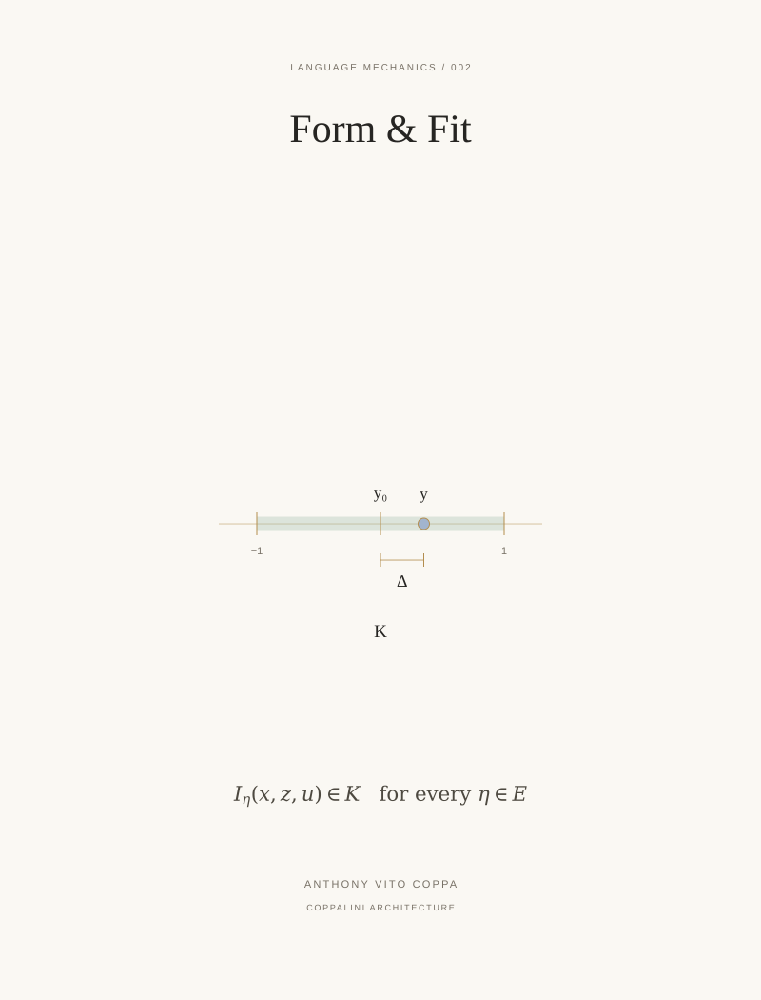

LM 002 / Formal-basis paper / COVER ARTWORK
Form & Fit


A one-dimensional interface read y is compared with datum y₀ inside a declared interval K. The segment remains the series form.
LM 002 / Formal-basis paper / COVER ARTWORK

A one-dimensional interface read y is compared with datum y₀ inside a declared interval K. The segment remains the series form.